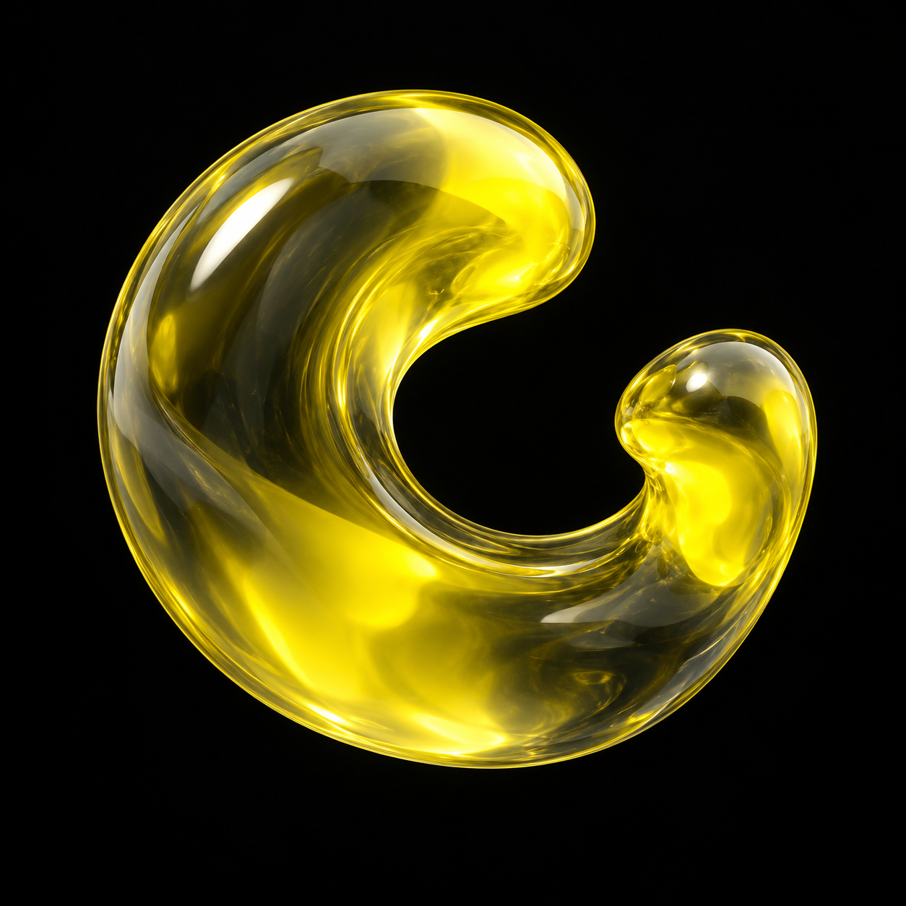
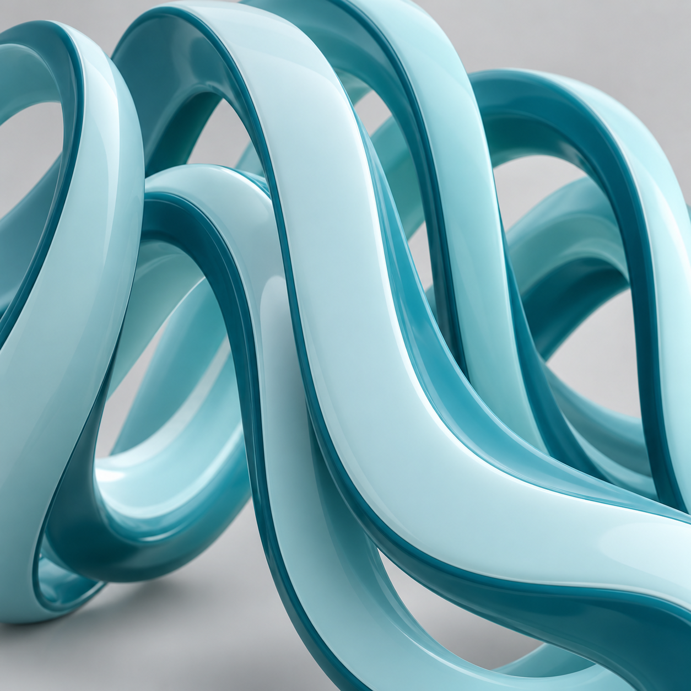

艺术收藏



PRINCIPLES / TEACHING STUDY
好的交互，有三个词。
这是一段前导教学的可操作复现。下拖时整块内容经过阻力跟随；松手后可以停靠，再由明确的教学按钮吸附回原位。
dy · 本次手指位移
px
d · 当前实际位移
px
手指下拖 ≥120px 后释放，停靠54px；短拖返回。点“吸附”回原位。120px规则是本页补写，原片未提供真实业务触发；没有自动重放或隐藏的定时回位。
当前阶段
原片12–16秒可辨171→84、180→86的手指/阻尼读数，之后实际位移54，再吸附归0；状态栏固定，下方黑标题、红图和三行一起下移。标签按教学顺序点亮，不能从画面确定真实产品判定。此处d=166·dy/(166+dy)、120px阈值、650ms回弹及显式分步控制为拟合/补写，54沿用教学读数而非源码实测。图像为独立生图，教学黑触点/空心圈未做成产品控件。